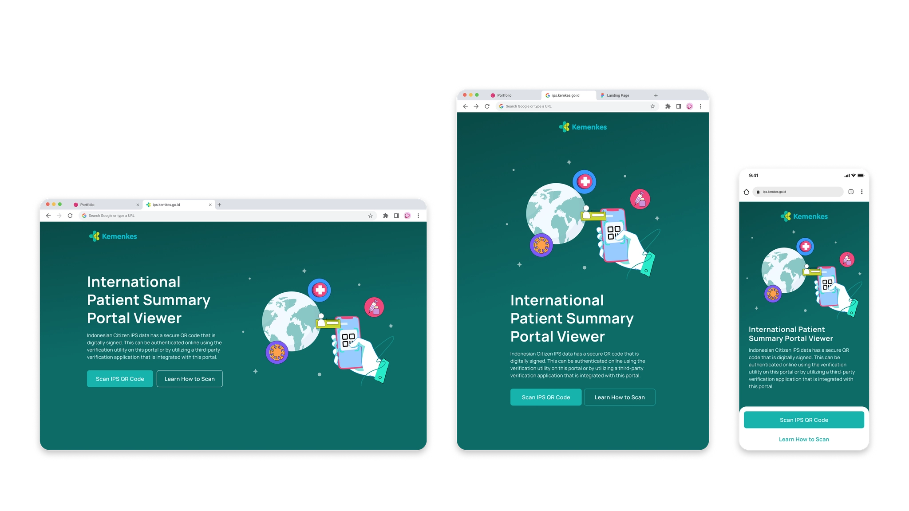
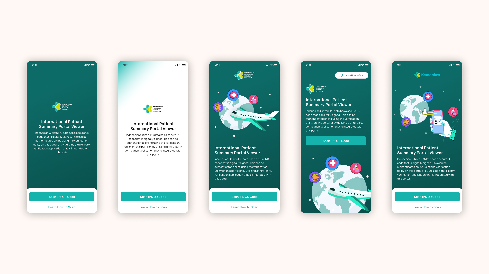
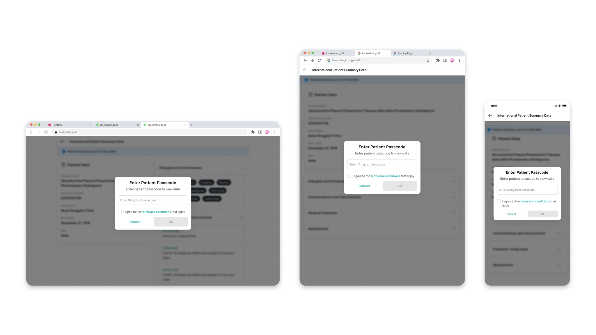
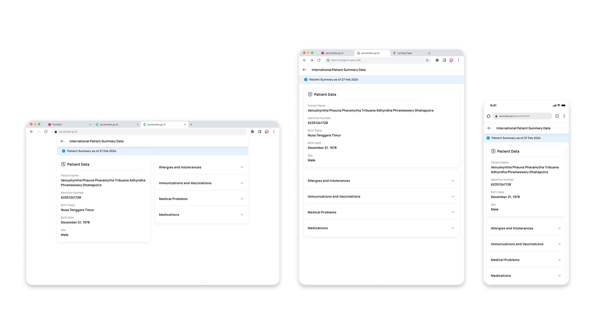
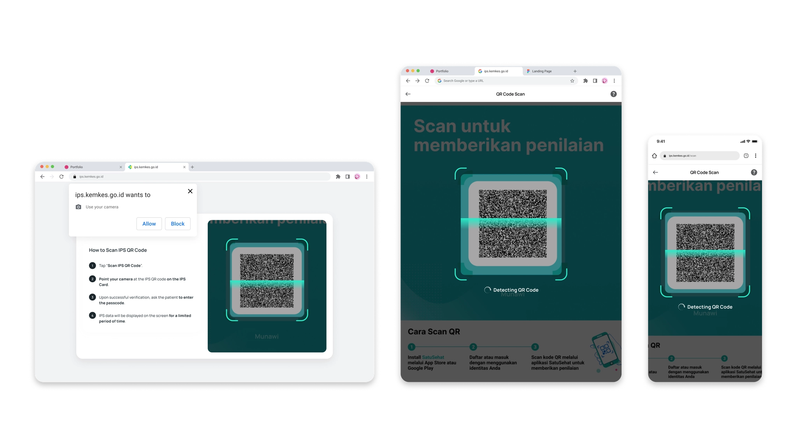

Case Study — Cross-Border Health
International Patient Summary — a health record that follows the patient across borders.
An unconscious pilgrim, a Saudi doctor who doesn't speak Indonesian, and a QR code clipped to a wrist. The portal had to turn that into a full medical history — in seconds, with no app and no login.

When a Doctor Can't Read Your Records
Every year, 221,000 Indonesians — the world's single largest national pilgrim contingent — travel to Saudi Arabia for Hajj. Many are elderly. A significant portion live with chronic conditions like hypertension, heart disease, or diabetes. Many have waited decades on a queue just for this moment.
Now imagine you're an emergency doctor at a Saudi hospital, and an unconscious pilgrim is brought in. They can't speak. Their companion doesn't speak Arabic. The only thing the patient has on them is a card clipped to their wrist. On that card: a QR code.
Before 2024, what happened next was slow. The attending physician had to start from scratch — running tests, waiting for results, hoping someone could translate. In previous years, patients often waited a long time before receiving treatment because they had to undergo observation and re-examination first.
The IPS Portal Viewer is what was designed to sit on the other end of that QR code. Scan it. Enter a passcode. See the patient's full health summary in seconds — allergies, medications, diagnoses, vaccinations, demographic data — all of it, without installing an app, without logging in, without any prior setup.
The Brief That Landed on My Desk
I want to be upfront about what kind of project this actually was.
Internally, we'd call this a candi — a project that drops suddenly, tied to an immovable deadline. The Ministry of Health had already committed to equipping every Indonesian pilgrim with a Hajj Health Card (KKJH) carrying an IPS QR code for the 2024 Hajj season. The portal that Saudi healthcare workers would use to read those QR codes needed to be designed, built, and deployed in time. My involvement started with a PRD landing in my hands and a calendar counting down.
What I had: a detailed Product Requirements Document. What I didn't have: time for a formal discovery sprint, access to Saudi healthcare workers for interviews, or the luxury of iterating on validated prototypes with real users.
This isn't an excuse — it's honest context for the process I'll describe. Working with constraints this tight forces you to be precise about what matters, and to find signal in every source available.
Research Without the Ideal Setup
Not every project starts with user interviews. This was one of them. But "no user interviews" doesn't mean "no research" — it means finding the signal elsewhere.
Reading the PRD as a user-journey document. The PM team had done significant legwork mapping out user flows, edge cases, and system behaviors. I treated the PRD not just as a spec to execute but as a proxy for user needs — paying attention to what was specified, and also reading between the lines. Why did the passcode need to be the last three digits of the pilgrim number specifically? Why a 20-minute session, not 30 or 10? Those decisions carried assumptions about users that I needed to understand.
Benchmarking health-data portals. The PRD referenced a Smart Health Links implementation from CIRG Washington as a comparable system. I looked at several QR-driven medical identification tools — how they handled the scan-to-data flow, how they communicated security requirements, and how they displayed structured clinical data legibly for non-Indonesian healthcare workers.
Understanding the context through secondary data. The people using this portal aren't at a desk in a quiet clinic. They're responding to pilgrims in Mecca in summer — temperatures regularly above 45°C, high patient volumes, and a language gap that makes even simple communication difficult. Almost 40% of Indonesian pilgrims are elderly and high-risk. The most common conditions among those who pass away during Hajj are cardiovascular and respiratory — exactly the kind of information that needs to be immediately visible when time matters.
That understanding shaped every decision about how fast the portal needed to respond, how much friction was acceptable at each step, and what "reading data at a glance" actually meant for this user.
The Core Problem
Stripping everything back, the real design challenge wasn't technical. It was human.
How do you give an Arabic-speaking healthcare worker — possibly on a phone, in a field clinic, responding to someone who may be unconscious — rapid and secure access to an Indonesian patient's medical history?
Two tensions sat at the heart of this:
Speed vs. security. Medical emergencies don't wait. But patient data is sensitive. Every security mechanism is also a potential delay.
Trust vs. access. The portal has no user authentication. Anyone who scans a QR code and enters the right passcode can read the data. That's a deliberate choice — and it needed to be designed carefully.
Constraints as the Starting Point
The PRD carried several non-negotiables that ended up shaping the entire experience. Rather than treating them as restrictions, I treated them as design inputs.
No login required. Saudi doctors shouldn't need to create accounts or carry portal credentials. Friction at the entry point of an emergency isn't just a UX problem — it's a safety problem.
Passcode tied to the patient. Each QR code is protected by the last three digits of the pilgrim's registration number. Simple enough that a conscious but disoriented patient can state it. Specific enough that it can't be guessed without context.
20-minute sessions. Long enough for an emergency consultation. Short enough that an unattended device left on a desk doesn't leave patient data exposed indefinitely.
IP whitelisting for trusted networks. If access comes from a whitelisted hospital IP, the portal bypasses the passcode and triggers a silent PDF download of the patient's record. Network-level trust within a hospital already implies institutional security — making the user re-enter a passcode there would be redundant friction.
150-day QR expiry, geofenced to Saudi Arabia and Indonesia, ISO 27269:2021 compliant. Patient data follows the international IPS standard with FHIR mapping, covering exactly five categories: demographic data, allergies and intolerances, immunizations, medical problems, and medications.
Finding the Visual Direction
Before going into flows, the first design decision was what a Saudi healthcare worker sees the moment they visit the portal.
I explored four landing-page directions. All shared the same structural logic — Kemenkes logo, title, description, and two CTAs ("Scan IPS QR Code" and "Learn How to Scan") — but differed in illustration style, visual weight, and the hierarchy between text and image.

The core questions driving the comparison:
Does this feel credible for a medical context without feeling clinical and cold? Is the primary CTA — "Scan IPS QR Code" — unmissable on first glance? Does the illustration reinforce what the portal does (scanning a physical card), rather than just decorating the page?
The final direction balanced warmth with institutional weight. The dark teal palette aligned with Indonesian Ministry of Health branding while reading as trustworthy in a medical context. The hero illustration explicitly showed a hand scanning a QR code on a card — functional, not abstract. "Learn How to Scan" was retained as a secondary link below the primary button: accessible, but not competing for attention.
Design Decisions Worth Talking Through
Most of the interesting work here happened in the why, not the what. Six decisions carried the experience.
1. Removing login entirely
In any standard data portal, you'd expect authentication at the door. Here, it was explicitly removed.
This sounds risky. But think about what login actually means in this context: Saudi doctors would need accounts created and managed somewhere. Who creates them? Who manages them? What happens when a doctor's credentials stop working mid-Hajj season? Every one of those questions becomes an operational failure point that has nothing to do with the patient needing care.
The security model moved into the QR code itself (digitally signed), into the passcode (patient-controlled, not system-managed), and into the session timer (auto-expiry). This isn't a shortcut — it's a deliberately distributed model that doesn't depend on any single point of institutional infrastructure in Saudi Arabia.
2. The passcode screen — whose job is it?
A subtle ambiguity: who actually enters the passcode? In an ideal scenario, a conscious patient states their number and the doctor types it in. In the real scenario — unconscious patient, no companion nearby — this requires the card itself to be legible, or a colleague to assist.
The design reflects that ambiguity. The input screen is simple enough to hand to a patient to tap themselves, or quick enough for a healthcare worker to type under pressure. The T&C checkbox below required both agreement and intent — a small but deliberate friction point signalling that this is protected data. Error handling was kept non-alarming: "Passcode does not match" rather than anything accusatory — communicate the issue and invite a retry, without making a stressed doctor feel they've made a major mistake.

3. Session expiry without a countdown
The 20-minute timer runs invisibly. There's no countdown on screen.
This was deliberate. A visible countdown in a medical emergency creates anxiety and distraction — the doctor's attention should be on the patient, not a timer. When the session expires, a clean full-screen overlay appears: "Your Session Has Expired. Re-enter patient passcode to view data." The underlying summary stays visible but blurred in the background — enough context that the doctor knows where they left off, while the data itself is fully obscured until re-authentication.
4. Expandable data sections
The patient summary shows five categories. All are collapsed by default except Patient Data.
This hierarchy matches the emergency use case. When someone is brought in unconscious, the doctor first confirms identity — name, date of birth, ID number. Only then do they check allergies before administering anything. Medical history and current medications can be reviewed as time allows. A single fully-expanded page would force the doctor to scroll through everything at once; collapsing by default keeps the five categories within a single screen-height, so the user reaches exactly what they need.

5. The IP-whitelist flow — designing for the invisible
When the system detects a whitelisted hospital IP, the experience changes completely. Scan the QR from a regular phone camera and the record auto-downloads as a PDF — no passcode, no interface. Access through the portal itself, and the download happens silently in the background while the scanner screen stays put.
From a UI perspective, this meant designing for a flow the user never consciously experiences. The challenge was making the background behavior reliable and its failure states graceful — what does the doctor see if the download fails, or the network drops mid-download? This required close collaboration with engineering on timing, fallbacks, and how to surface failure without alarming the user unnecessarily.
6. Error states for high-pressure moments
Not every scan goes well. The portal needed to handle a non-IPS QR code, an expired code (past the 150-day window), a code with no passcode attached, camera permission denied, and no data found for a scanned patient.
Each error state was designed to be direct and actionable — not just a message explaining the problem, but a clear next step. "Try Again" re-opens the camera. "Back to Homepage" returns to the start. "Please scan a valid IPS QR code" says exactly what went wrong, without technical jargon.
The Final Product
The IPS Portal Viewer shipped in time for the 2024 Hajj season and is live at ips.kemkes.go.id. The flow for a healthcare worker:
Open the portal — no login, no account. Tap "Scan IPS QR Code" and the camera opens with live QR detection. Point at the pilgrim's card; the QR is read automatically. Enter the passcode (the last three digits of the pilgrim's registration number), agree to the terms, and tap OK. The patient summary opens — identity confirmed, data accessible by section. After 20 minutes, the session expires and prompts re-authentication.
For hospital networks with whitelisted IPs, the scan and passcode steps are bypassed entirely — the record downloads automatically. The portal is fully responsive across mobile, tablet, and desktop, with mobile as the primary form factor given the emergency scan context.

Scale and Impact
A few numbers give this project its weight. In 2024, 221,000 Indonesian pilgrims were equipped with KKJH health cards carrying IPS QR codes — one of the first large-scale cross-border health-data interoperability implementations in the world using the WHO IPS standard, with 14 Saudi hospitals formally cooperating for the season.
Around 40% of Indonesian Hajj pilgrims are elderly and high-risk — the exact demographic most likely to need this portal in an emergency. Hajj mortality moved from 774 deaths in 2023 to 462 in 2024, and the Ministry of Health cited the IPS QR code system as a key part of its intervention strategy.
I won't claim the portal design caused that drop — the full intervention included medical training, early health screening, on-ground emergency teams, and more. But the system existed to make treatment faster and better informed, and the overall direction moved the right way.
The bigger picture: Indonesia and Malaysia have since been cited as pioneers in large-scale cross-border health-data interoperability. The IPS Health Card has expanded into a full SISKOHAT–Nusuk data integration between the Indonesian and Saudi government systems.
Honest Reflection
If I'd had more time and better access, here's what I'd revisit.
Testing with actual users
Even five sessions with Saudi hospital staff would have surfaced things I couldn't anticipate from a desk. How they hold their phone when scanning in a crowded field clinic. Whether Arabic localization changed the visual rhythm. Whether the 20-minute timer felt too long, too short, or just right in practice.
Arabic localization from day one
The primary users are Arabic speakers, but the portal shipped in English first, with localization marked as a future phase. RTL layout is more than translating text — it flips the entire spatial logic of the interface. This should have been a design constraint from the first wireframe, not a Phase 2 item.
A clearer protocol for "the patient can't help"
The passcode flow assumes the patient is conscious enough to provide their number, or that a companion nearby knows it. For a patient who arrives alone and unconscious, there's no explicit escalation path in the design. That's the edge case that deserved more explicit consideration.
Session length validated in real use
20 minutes was a product decision. I'd want to know whether that number actually matches how long a typical emergency consultation takes — the kind of parameter that sounds reasonable on paper but might be wrong for 30% of real cases.
What This Project Taught Me
Designing under tight constraints — without user research, on a government deadline, for a life-critical use case — forces a kind of discipline that's easy to neglect when you have more time and resources. You can't iterate endlessly. You have to commit to principles and defend them.
The core principle that guided every decision here: friction is not neutral in an emergency. Every extra tap, every confirmation dialog, every loading screen is a moment where a Saudi doctor's attention is on the interface instead of the patient. Design for the worst case — and the normal case takes care of itself.
I also came away with genuine respect for what a well-written PRD can do when user research isn't available. The PM team had done real work thinking through edge cases, security models, and behavioral flows. My job was to take those specifications and translate them into something that felt human and trustworthy — and to ask the right questions when the spec left gaps.